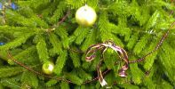

Ev'là Noué tch'appraiche acouo eune fais et d'vant qu'nou l'sait le 25 dé Dézembre veindra et s'en îtha comme d'habitude, apportant jouaie, excitement et espêthance pouor bein des gens, mais pouor d'autres seulement tristesse et m'sespé.
Nou ouait dithe parmi plusieurs qué Noué n'est pus lé Noué du temps pâssé et i' y'en a d'autres tchi disent qué Noué n'est qué pouor les êfants. Et bein, né v'là du niolîn. Malheutheusement les cheins tchi pensent dé même n'ont pas prîns connaîssance du vrai message dé l'Evangile. J'avons tous bouonne raîthon dé nos rêjoui, comme lé fîtent les bèrgers quand l'ange lus dit 'J'vos annonce eune grande jouaie, tchi s'sa pouor tout l'peupl'ye; aniet, dans la ville dé David, lé Sauveur, tch'est lé Christ, lé Seigneur, vos est né'.
 Et ches bèrgers s'en fûtent a Bethléhem pouor vaie chein tchi 'tait arrivé. I' dêcouvrîtent pouor ieux-mêmes la bouonté de Dgieu envers san peupl'ye en env'yiant un Sauveur pouor les libéther dé lus péchés. Mouôn Doue d'la vie! Comment qu'nou peut dithe qué Noué est seulement pouor les êfants? Noué est pouor tous tch'ont péchi, et i' n'y a pèrsonne tchi n'a pas bésôin d'la grâce dé Dgieu. St Paul, dans s'n êpitre ès Romains, nos laîsse en autchun doute quand i' nos dit qué tous ont péchi, même lé pus saint homme.
Quand les clioches sonn'thont la sèrvelle dé Noué, sachiz tch'i' procliâment la miyeu nouvelle dé tout temps et èrchévez pouor vos-mêmes lé présent qué Dgieu vos offre. Ch'est un présent tch'a 'té acaté à grand' prix et sa valeu agrandit à m'suthe qué nou dêcouvre qué ch'est Jésû-Christ uniquement tchi nos donne dé l'espéthancé pouor l'av'nin et pouor l'êtèrnité.
Brian Vibert
JEP 12/12/2000
Viyiz étout: